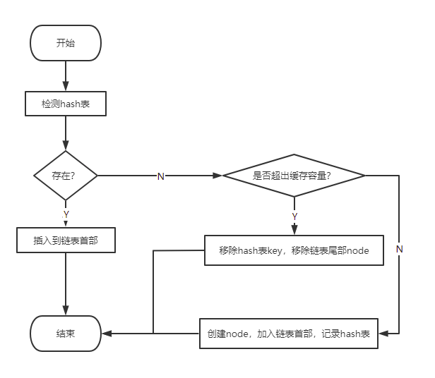
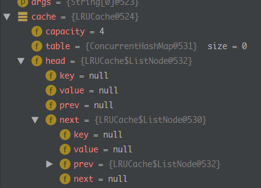
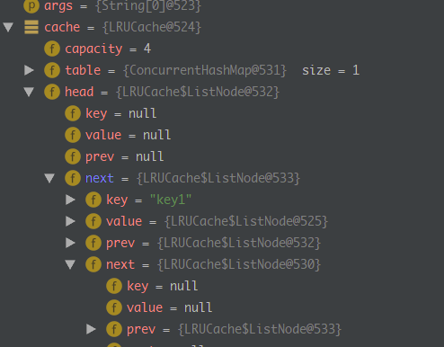
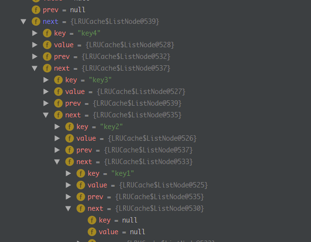
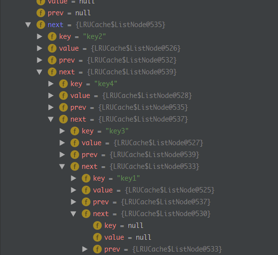
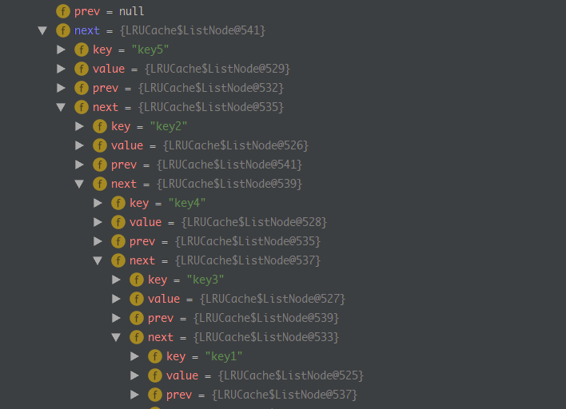
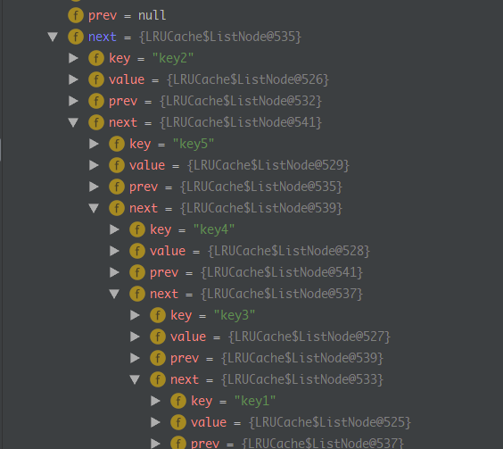

LRU
LRU（Least Recently Used）是一种常见的页面置换算法，在计算中，所有的文件操作都要放在内存中进行，然而计算机内存大小是固定的，所以我们不可能把所有的文件都加载到内存，因此我们需要制定一种策略对加入到内存中的文件进行选择。
常见的页面置换算法有如下几种：
- LRU 最近最久未使用
- FIFO 先进先出置换算法 类似队列
- OPT 最佳置换算法 （理想中存在的）
- NRU Clock置换算法
- LFU 最少使用置换算法
- PBA 页面缓冲算法
LRU原理
LRU的设计原理就是，当数据在最近一段时间经常被访问，那么它在以后也会经常被访问。这就意味着，如果经常访问的数据，我们需要让其能够快速命中，而不常访问的数据，我们在容量超出限制内，要将其淘汰。
当我们的数据按照如下顺序进行访问时，LRU的工作原理如下：

正如上面图所表示的意思：每次访问的数据都会放在栈顶，当访问的数据不在内存中，且栈内数据存储满了，我们就要选择移除栈底的元素，因为在栈底部的数据访问的频率是比较低的。所以要将其淘汰。
LRU的实现
如何来设计一款LRU算法呢？对于这种类似序列的结构我们一般可以选择链表或者是数组来构建。
差异对比：
- 数组 查询比较快，但是对于增删来说是一个不是一个好的选择
- 链表 查询比较慢，但是对于增删来说十分方便O(1)时间复杂度内搞定
有没有办法既能够让其搜索快，又能够快速进行增删操作。
我们可以选择链表+hash表，hash表的搜索可以达到0(1)时间复杂度，这样就完美的解决我们搜索时间慢的问题了
基于链表+Hash表
Hash表，在Java中HashMap是我们的不二选择
链表，Node一个双向链表的实现，Node中存放的是数结构如下：
1
2
3
4
5
6
| class Node<K,V>{
private K key;
private V value;
private Node<K,V> prev;
private Node<K,V> next;
}
|
我们通过HashMap中key存储Node的key,value存储Node来建立Map对Node的映射关系。我们将HashMap看作是一张检索表，我们可以快速的检索到我们需要定位的Node
代码实现
大致思路:
1> 构建双向链表节点ListNode，应包含key,value,prev,next这几个基本属性
2> 对于Cache对象来说，我们需要规定缓存的容量，所以在初始化时，设置容量大小，然后实例化双向链表的head,tail，并让head.next->tail , tail.prev->head，这样我们的双向链表构建完成
3> 对于get操作,我们首先查阅hashmap，如果存在的话，直接将Node从当前位置移除，然后插入到链表的首部，在链表中实现删除直接让node的前驱节点指向后继节点，很方便.如果不存在，那么直接返回Null
4> 对于put操作，比较麻烦。

1
2
3
4
5
6
7
8
9
10
11
12
13
14
15
16
17
18
19
20
21
22
23
24
25
26
27
28
29
30
31
32
33
34
35
36
37
38
39
40
41
42
43
44
45
46
47
48
49
50
51
52
53
54
55
56
57
58
59
60
61
62
63
64
65
66
67
68
69
70
71
72
73
74
75
76
77
78
79
80
81
82
83
84
85
86
87
88
89
90
91
92
93
94
95
96
97
98
99
100
101
102
103
104
105
106
| package top.sunfy;
import java.util.Map;
import java.util.concurrent.ConcurrentHashMap;
public class LRUCache<V> {
private int capacity = 1024;
private Map<String, ListNode<String, V>> table = new ConcurrentHashMap<>();
private ListNode<String, V> head;
private ListNode<String, V> tail;
public LRUCache(int capacity) {
this();
this.capacity = capacity;
}
public LRUCache() {
head = new ListNode<>();
tail = new ListNode<>();
head.next = tail;
head.prev = null;
tail.prev = head;
tail.next = null;
}
public V get(String key) {
ListNode<String, V> node = table.get(key);
if (node == null) {
return null;
}
node.prev.next = node.next;
node.next.prev = node.prev;
node.next = head.next;
head.next.prev = node;
node.prev = head;
head.next = node;
table.put(key, node);
return node.value;
}
public void put(String key, V value) {
ListNode<String, V> node = table.get(key);
if (node == null) {
if (table.size() == capacity) {
table.remove(tail.prev.key);
tail.prev = tail.next;
tail.next = null;
tail = tail.prev;
}
node = new ListNode<>();
node.key = key;
node.value = value;
table.put(key, node);
}
node.next = head.next;
head.next.prev = node;
node.prev = head;
head.next = node;
}
public static class ListNode<K, V> {
private K key;
private V value;
ListNode<K, V> prev;
ListNode<K, V> next;
public ListNode(K key, V value) {
this.key = key;
this.value = value;
}
public ListNode() {
}
}
public static void main(String[] args) {
LRUCache<ListNode> cache = new LRUCache<>(4);
ListNode<String, Integer> node1 = new ListNode<>("key1", 1);
ListNode<String, Integer> node2 = new ListNode<>("key2", 2);
ListNode<String, Integer> node3 = new ListNode<>("key3", 3);
ListNode<String, Integer> node4 = new ListNode<>("key4", 4);
ListNode<String, Integer> node5 = new ListNode<>("key5", 5);
cache.put("key1", node1);
cache.put("key2", node2);
cache.put("key3", node3);
cache.put("key4", node4);
cache.get("key2");
cache.put("key5", node5);
cache.get("key2");
}
}
|
断点执行情况：








Copyright 2021 sunfy.top ALL Rights Reserved